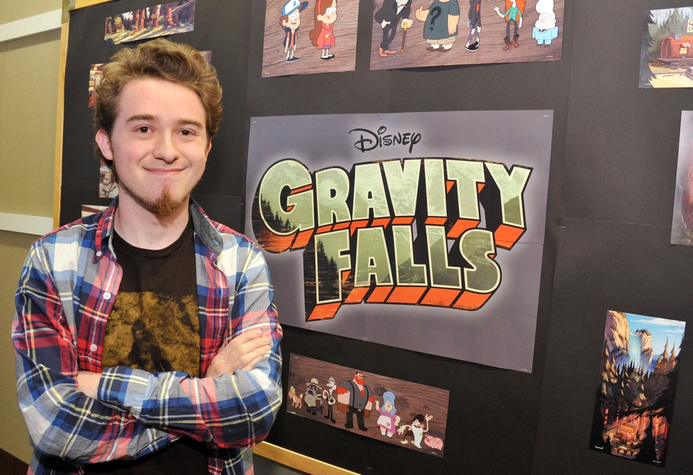

| INICIO | GALERíA | LISTA DE EPISODIOS | LIBROS | INFO DE LA PRODUCTORA | ALEX HIRSCH | MAS INFORMACION |
Alexander Robert Hirsch es un animador estadounidense, artista de guion gráfico, actor de doblaje y productor de televisión. Él es mejor conocido como el creador de la serie animada, de Disney Channel, Gravity Falls: Un verano de misterios, donde hace las voces de algunos de los personajes. Anteriormente trabajó como artista de guion gráfico en la serie, de Cartoon Network, Las maravillosas desventuras de Flapjack y la serie, de Disney Channel, Pecezuelos.
Nació en Piedmont (California) el 18 de junio de 1985. Tiene cuatro hermanas, Jessica, Katrina, Lauren y su melliza, Ariel Hirsch, a quien suele mencionar en sus entrevistas. En 2007 se graduó en el Instituto de Artes de California, donde conoció diferentes artistas y animadores que colaborarían con él a lo largo de su carrera.
Alex Hirsch comenzó como artista de guion gráfico y escritor para Las maravillosas desventuras de Flapjack, donde trabajó con –y se hizo amigo de– animadores como J. G. Quintel (que más tarde crearía Un Show Más) y Pendleton Ward (creador de Hora de aventura)
En el verano de 2006, trabajó en el estudio de animación Laika, lo que más tarde lo inspiró para crear la serie de animación que lo hizo famoso, Gravity Falls. Más tarde pasó a ser el escritor, artista del guion gráfico y consultor creativo de Pecezuelos, que también desarrolló para televisión junto a Maxwell Atoms.
Mientras trabajaba para Cartoon Network en la serie Las maravillosas desventuras de Flapjack, Mike Moon, ejecutivo de Disney Channel, le ofreció producir una serie para el canal tras haber visto uno de sus proyectos, así nació Gravity Falls. Los personajes principales de la serie están inspirados en miembros de la familia de Hirsch, y en las vacaciones que pasó con su hermana durante su infancia. La serie se estrenó en Estados Unidos el 15 de junio de 2012. Tras el éxito obtenido, el 29 de julio de 2013 se anunció la realización de una segunda temporada, estrenada el 1 de agosto de 2014.